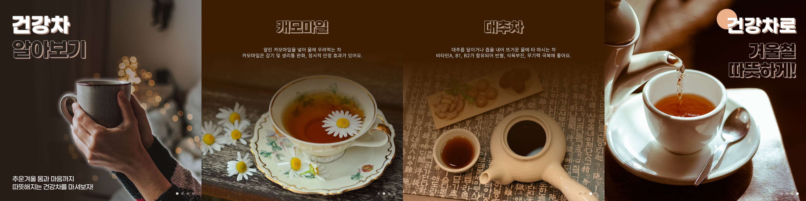
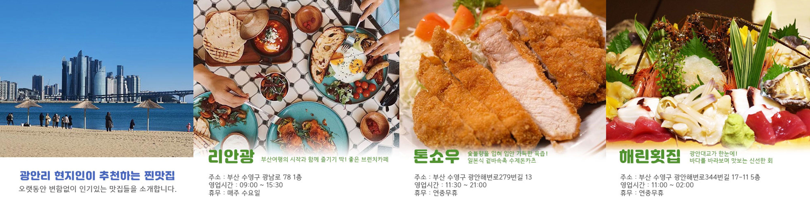
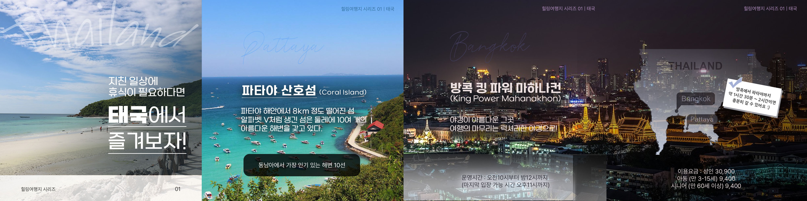

[카드뉴스_건강차]
환절기에 마시면 몸에 좋은 건강차를 소개하는 카드뉴스 입니다.
차의 종류와 특징을 이미지와 함께 넣었습니다.
# 추운 날씨 몸을 녹일 땐 따뜻한 차 면역력도 증가시키는 건강차
[카드뉴스_맛집]
광안리에서 즐길 수 있는 동네 맛집을 소개하는 카드뉴스 입니다.
메뉴 이미지와 상호명, 간단 소개, 주소 , 영업시간 , 휴무를 알 수 있게 추가했습니다.
# 광안대교 뷰 맛집, 광안리 토박이가 인정한 맛집 추천
[카드뉴스_힐링여행지]
코로나로 생겼던 여행제한이 해제되면서 미뤄뒀던 여행준비를 계획하는 분들에게 힐링여행지 동남아를 소개하는 카드뉴스 입니다.
산호섬과 킹파워 마하나컨의 소개하는 문구와 지도를 추가하여 이동 거리를 한눈에 볼 수 있도록 하였습니다.
# 휴식이 필요한 요즘 ! 태국으로 떠나요 ~ 일상에 지쳤을때 힐링할 수 있는 매력적인 태국의 방콕 / 파타야